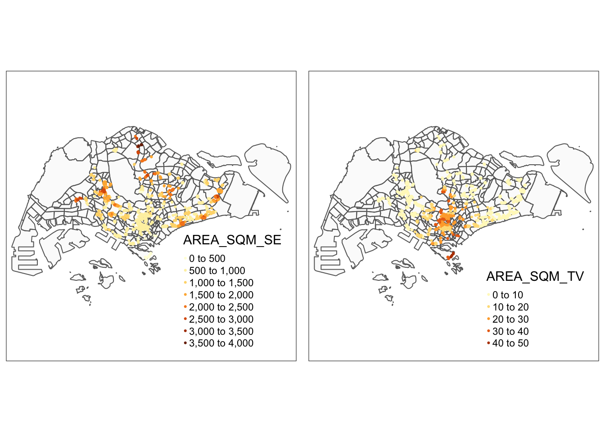

pacman::p_load(olsrr, ggstatsplot, ggpubr, sf, spdep, sfdep, GWmodel, tmap, tidyverse, gtsummary,see,performance,datawizard)In Class Exercise 7: Geographically weighted regression with sf object
Load Packages
Importing the Datasets
mpsz <- st_read(dsn = "data/geospatial", layer = "MP14_SUBZONE_WEB_PL") %>%
st_transform(3414)Reading layer `MP14_SUBZONE_WEB_PL' from data source
`/Users/seesarhlakyi/Desktop/ssrhk/ISSS626-GAA/In-class_Ex/In-class_Ex07/data/geospatial'
using driver `ESRI Shapefile'
Simple feature collection with 323 features and 15 fields
Geometry type: MULTIPOLYGON
Dimension: XY
Bounding box: xmin: 2667.538 ymin: 15748.72 xmax: 56396.44 ymax: 50256.33
Projected CRS: SVY21condo_resale = read_csv("data/aspatial/Condo_resale_2015.csv")Converting aspatial data frame into a simple feature
This will create a geometry column with the coordinates from Longitude and Latitude. 4326 is WGS84 which is the original data source. Then convert it to EPSG: 3414.
Use tmap to see if it falls into Singapore properly.
condo_resale_sf <- st_as_sf(condo_resale,
coords = c("LONGITUDE", "LATITUDE"),
crs=4326) %>%
st_transform(crs=3414)Correlation Analysis
With ggcorrmat from ggstatsplot, the output can be saved as tibble, Easier to extract
ggcorrmat(condo_resale[ ,5:23])
For multiple linear regression, we should do a second test which is VIF to confirm correlation.
Multiple Linear Regression
Hedonic Linear Regression Method
condo.mlr <- lm(formula = SELLING_PRICE ~ AREA_SQM + AGE +
PROX_CBD + PROX_CHILDCARE + PROX_ELDERLYCARE +
PROX_URA_GROWTH_AREA + PROX_HAWKER_MARKET + PROX_KINDERGARTEN +
PROX_MRT + PROX_PARK + PROX_PRIMARY_SCH +
PROX_TOP_PRIMARY_SCH + PROX_SHOPPING_MALL + PROX_SUPERMARKET +
PROX_BUS_STOP + NO_Of_UNITS + FAMILY_FRIENDLY + FREEHOLD + LEASEHOLD_99YR,
data=condo_resale_sf)
summary(condo.mlr)
Call:
lm(formula = SELLING_PRICE ~ AREA_SQM + AGE + PROX_CBD + PROX_CHILDCARE +
PROX_ELDERLYCARE + PROX_URA_GROWTH_AREA + PROX_HAWKER_MARKET +
PROX_KINDERGARTEN + PROX_MRT + PROX_PARK + PROX_PRIMARY_SCH +
PROX_TOP_PRIMARY_SCH + PROX_SHOPPING_MALL + PROX_SUPERMARKET +
PROX_BUS_STOP + NO_Of_UNITS + FAMILY_FRIENDLY + FREEHOLD +
LEASEHOLD_99YR, data = condo_resale_sf)
Residuals:
Min 1Q Median 3Q Max
-3471036 -286903 -22426 239412 12254549
Coefficients:
Estimate Std. Error t value Pr(>|t|)
(Intercept) 543071.4 136210.9 3.987 7.03e-05 ***
AREA_SQM 12688.7 370.1 34.283 < 2e-16 ***
AGE -24566.0 2766.0 -8.881 < 2e-16 ***
PROX_CBD -78122.0 6791.4 -11.503 < 2e-16 ***
PROX_CHILDCARE -333219.0 111020.3 -3.001 0.002734 **
PROX_ELDERLYCARE 170950.0 42110.8 4.060 5.19e-05 ***
PROX_URA_GROWTH_AREA 38507.6 12523.7 3.075 0.002147 **
PROX_HAWKER_MARKET 23801.2 29299.9 0.812 0.416739
PROX_KINDERGARTEN 144098.0 82738.7 1.742 0.081795 .
PROX_MRT -322775.9 58528.1 -5.515 4.14e-08 ***
PROX_PARK 564487.9 66563.0 8.481 < 2e-16 ***
PROX_PRIMARY_SCH 186170.5 65515.2 2.842 0.004553 **
PROX_TOP_PRIMARY_SCH -477.1 20598.0 -0.023 0.981525
PROX_SHOPPING_MALL -207721.5 42855.5 -4.847 1.39e-06 ***
PROX_SUPERMARKET -48074.7 77145.3 -0.623 0.533273
PROX_BUS_STOP 675755.0 138552.0 4.877 1.20e-06 ***
NO_Of_UNITS -216.2 90.3 -2.394 0.016797 *
FAMILY_FRIENDLY 142128.3 47055.1 3.020 0.002569 **
FREEHOLD 300646.5 77296.5 3.890 0.000105 ***
LEASEHOLD_99YR -77137.4 77570.9 -0.994 0.320192
---
Signif. codes: 0 '***' 0.001 '**' 0.01 '*' 0.05 '.' 0.1 ' ' 1
Residual standard error: 755800 on 1416 degrees of freedom
Multiple R-squared: 0.652, Adjusted R-squared: 0.6474
F-statistic: 139.6 on 19 and 1416 DF, p-value: < 2.2e-16The output is a lm object.
Model assessment: olsrr method
This tool is used to calibrate regression model, generate a more organized report and do stepwise regression.
ols_regress(condo.mlr) Model Summary
-----------------------------------------------------------------------------
R 0.807 RMSE 750537.537
R-Squared 0.652 MSE 571262902261.220
Adj. R-Squared 0.647 Coef. Var 43.160
Pred R-Squared 0.637 AIC 42971.173
MAE 412117.987 SBC 43081.835
-----------------------------------------------------------------------------
RMSE: Root Mean Square Error
MSE: Mean Square Error
MAE: Mean Absolute Error
AIC: Akaike Information Criteria
SBC: Schwarz Bayesian Criteria
ANOVA
--------------------------------------------------------------------------------
Sum of
Squares DF Mean Square F Sig.
--------------------------------------------------------------------------------
Regression 1.515738e+15 19 7.977571e+13 139.648 0.0000
Residual 8.089083e+14 1416 571262902261.220
Total 2.324647e+15 1435
--------------------------------------------------------------------------------
Parameter Estimates
-----------------------------------------------------------------------------------------------------------------
model Beta Std. Error Std. Beta t Sig lower upper
-----------------------------------------------------------------------------------------------------------------
(Intercept) 543071.420 136210.918 3.987 0.000 275874.535 810268.305
AREA_SQM 12688.669 370.119 0.579 34.283 0.000 11962.627 13414.710
AGE -24566.001 2766.041 -0.166 -8.881 0.000 -29991.980 -19140.022
PROX_CBD -78121.985 6791.377 -0.267 -11.503 0.000 -91444.227 -64799.744
PROX_CHILDCARE -333219.036 111020.303 -0.087 -3.001 0.003 -551000.984 -115437.089
PROX_ELDERLYCARE 170949.961 42110.748 0.083 4.060 0.000 88343.803 253556.120
PROX_URA_GROWTH_AREA 38507.622 12523.661 0.059 3.075 0.002 13940.700 63074.545
PROX_HAWKER_MARKET 23801.197 29299.923 0.019 0.812 0.417 -33674.725 81277.120
PROX_KINDERGARTEN 144097.972 82738.669 0.030 1.742 0.082 -18205.570 306401.514
PROX_MRT -322775.874 58528.079 -0.123 -5.515 0.000 -437586.937 -207964.811
PROX_PARK 564487.876 66563.011 0.148 8.481 0.000 433915.162 695060.590
PROX_PRIMARY_SCH 186170.524 65515.193 0.072 2.842 0.005 57653.253 314687.795
PROX_TOP_PRIMARY_SCH -477.073 20597.972 -0.001 -0.023 0.982 -40882.894 39928.747
PROX_SHOPPING_MALL -207721.520 42855.500 -0.109 -4.847 0.000 -291788.613 -123654.427
PROX_SUPERMARKET -48074.679 77145.257 -0.012 -0.623 0.533 -199405.956 103256.599
PROX_BUS_STOP 675755.044 138551.991 0.133 4.877 0.000 403965.817 947544.272
NO_Of_UNITS -216.180 90.302 -0.046 -2.394 0.017 -393.320 -39.040
FAMILY_FRIENDLY 142128.272 47055.082 0.056 3.020 0.003 49823.107 234433.438
FREEHOLD 300646.543 77296.529 0.117 3.890 0.000 149018.525 452274.561
LEASEHOLD_99YR -77137.375 77570.869 -0.030 -0.994 0.320 -229303.551 75028.801
-----------------------------------------------------------------------------------------------------------------First we refer to ANOVA test results. Since p value 0.000 is smaller than 0.05, we will reject the null hypothesis. Referring to Adjusted R square, this model is able to explain close to 64.7% of the price variation.
Then we can describe the parameter estimates. We look at the p-value and see which variables are significant. Next, we will do diagnostic test such as VIF.
PROX_HAWKER_MARKET, PROX_TOP_PRIMARY_SCH, PROX_KINDERGARTEN, PROX_SUPERMARKET and LEASEHOLD_99YR are not statistically significant. We should exclude those variables.
Multicollinearity - VIF
ols_vif_tol(condo.mlr) Variables Tolerance VIF
1 AREA_SQM 0.8601326 1.162611
2 AGE 0.7011585 1.426211
3 PROX_CBD 0.4575471 2.185567
4 PROX_CHILDCARE 0.2898233 3.450378
5 PROX_ELDERLYCARE 0.5922238 1.688551
6 PROX_URA_GROWTH_AREA 0.6614081 1.511926
7 PROX_HAWKER_MARKET 0.4373874 2.286303
8 PROX_KINDERGARTEN 0.8356793 1.196631
9 PROX_MRT 0.4949877 2.020252
10 PROX_PARK 0.8015728 1.247547
11 PROX_PRIMARY_SCH 0.3823248 2.615577
12 PROX_TOP_PRIMARY_SCH 0.4878620 2.049760
13 PROX_SHOPPING_MALL 0.4903052 2.039546
14 PROX_SUPERMARKET 0.6142127 1.628100
15 PROX_BUS_STOP 0.3311024 3.020213
16 NO_Of_UNITS 0.6543336 1.528272
17 FAMILY_FRIENDLY 0.7191719 1.390488
18 FREEHOLD 0.2728521 3.664990
19 LEASEHOLD_99YR 0.2645988 3.779307None of the VIF are greater than 5. Although there is correlation present, the VIF shows that there is no concern. We do not need to eliminate.
Dummy variables (yes/no) will not affect this much. It is normal for two variables of dummy variable to have highest VIF since they are derived from one column.
Variable Selection
However, some variables are not statistically significant. We will use stepwise regression to select the variables that meet the criteria.
Criteria: Reject p-value greater than alpha value of 0.05
Both forward and backward stepwise has no replacement after we have removed the variable.
Mixed stepwise has replacement every iteration.
We will use oslr package to do this.
Since p value is the criteria, we use ols_step_forward_p(). Set details to TRUE to see all the steps.
condo_fw_mlr <- ols_step_forward_p(condo.mlr, p_val= 0.05, details=FALSE)plot(condo_fw_mlr)All significant variables will be retained.
Model Diagonistic
Test for Non Linearity
ols_plot_resid_fit(condo_fw_mlr$model)
Most points hover around red line meaning that it conforms to linearity assumption.
Test for Normality Assumption
ols_plot_resid_hist(condo_fw_mlr$model)
The figure resembles normal distribution.
ols_test_normality(condo_fw_mlr$model)-----------------------------------------------
Test Statistic pvalue
-----------------------------------------------
Shapiro-Wilk 0.6856 0.0000
Kolmogorov-Smirnov 0.1366 0.0000
Cramer-von Mises 121.0768 0.0000
Anderson-Darling 67.9551 0.0000
-----------------------------------------------Test for Spatial Autocorrelation
mlr_output <- as.data.frame(condo_fw_mlr$model$residuals) %>%
rename ('FW_MLR_RES' = 'condo_fw_mlr$model$residuals')Then we will use cbind (since there is no unique identifier) to join the newly created df with condo_resale_sf (point feature) to plot the distribution.
condo_resale_sf <- cbind(condo_resale_sf,
mlr_output$FW_MLR_RES) %>%
rename ('MLR_RES'='mlr_output.FW_MLR_RES')
tmap_options(check.and.fix = TRUE) add this line to fix geometric error - POLYGONS and LINES
tmap_mode('plot')
tm_shape (mpsz) +
tmap_options(check.and.fix = TRUE) +
tm_polygons(alpha=0.4) +
tm_shape(condo_resale_sf)+
tm_dots(col= 'MLR_RES',
alpha = 0.6,
style= 'quantile')
Darker green: estimated price is much higher than observed price
Lighter green: estimated price is much lower than observed price
There seems to be a sign of spatial autocorrelation.
Spatially Stationary Test
We will compute distance based weights. longlat= FALSE because we don’t want it to do the projection since it already projected.
condo_resale_sf <- condo_resale_sf %>%
mutate (nb = st_knn(geometry, k = 6,
longlat= FALSE),
wt = st_weights(nb,
style = 'W'),
.before = 1)global_moran_perm(condo_resale_sf$MLR_RES,
condo_resale_sf$nb,
condo_resale_sf$wt,
alternative = "two.sided",
nsim=99)
Monte-Carlo simulation of Moran I
data: x
weights: listw
number of simulations + 1: 100
statistic = 0.32254, observed rank = 100, p-value < 2.2e-16
alternative hypothesis: two.sidedSince p value is less than 0.05, we will reject the null hypothesis that the residuals are randomly distributed.
Since observed global moran i is greater than 0, we infer that the residuals resemble cluster distribution.
Hedonic Pricing using GWmodel
Fixed Bandwidth GWR Model
bw_fixed <- bw.gwr(formula = SELLING_PRICE ~ AREA_SQM + AGE +
PROX_CBD+ PROX_CHILDCARE+
PROX_ELDERLYCARE + PROX_URA_GROWTH_AREA+
PROX_MRT + PROX_PARK + PROX_PRIMARY_SCH +
PROX_SHOPPING_MALL+PROX_BUS_STOP +
NO_Of_UNITS+FAMILY_FRIENDLY + FREEHOLD,
data = condo_resale_sf,
approach ="CV",
kernel ="gaussian",
adaptive = FALSE,
longlat = FALSE)Fixed bandwidth: 17660.96 CV score: 8.259118e+14
Fixed bandwidth: 10917.26 CV score: 7.970454e+14
Fixed bandwidth: 6749.419 CV score: 7.273273e+14
Fixed bandwidth: 4173.553 CV score: 6.300006e+14
Fixed bandwidth: 2581.58 CV score: 5.404958e+14
Fixed bandwidth: 1597.687 CV score: 4.857515e+14
Fixed bandwidth: 989.6077 CV score: 4.722431e+14
Fixed bandwidth: 613.7939 CV score: 1.379526e+16
Fixed bandwidth: 1221.873 CV score: 4.778717e+14
Fixed bandwidth: 846.0596 CV score: 4.791629e+14
Fixed bandwidth: 1078.325 CV score: 4.751406e+14
Fixed bandwidth: 934.7772 CV score: 4.72518e+14
Fixed bandwidth: 1023.495 CV score: 4.730305e+14
Fixed bandwidth: 968.6643 CV score: 4.721317e+14
Fixed bandwidth: 955.7206 CV score: 4.722072e+14
Fixed bandwidth: 976.6639 CV score: 4.721387e+14
Fixed bandwidth: 963.7202 CV score: 4.721484e+14
Fixed bandwidth: 971.7199 CV score: 4.721293e+14
Fixed bandwidth: 973.6083 CV score: 4.721309e+14
Fixed bandwidth: 970.5527 CV score: 4.721295e+14
Fixed bandwidth: 972.4412 CV score: 4.721296e+14
Fixed bandwidth: 971.2741 CV score: 4.721292e+14
Fixed bandwidth: 970.9985 CV score: 4.721293e+14
Fixed bandwidth: 971.4443 CV score: 4.721292e+14
Fixed bandwidth: 971.5496 CV score: 4.721293e+14
Fixed bandwidth: 971.3793 CV score: 4.721292e+14
Fixed bandwidth: 971.3391 CV score: 4.721292e+14
Fixed bandwidth: 971.3143 CV score: 4.721292e+14
Fixed bandwidth: 971.3545 CV score: 4.721292e+14
Fixed bandwidth: 971.3296 CV score: 4.721292e+14
Fixed bandwidth: 971.345 CV score: 4.721292e+14
Fixed bandwidth: 971.3355 CV score: 4.721292e+14
Fixed bandwidth: 971.3413 CV score: 4.721292e+14
Fixed bandwidth: 971.3377 CV score: 4.721292e+14
Fixed bandwidth: 971.34 CV score: 4.721292e+14
Fixed bandwidth: 971.3405 CV score: 4.721292e+14
Fixed bandwidth: 971.3396 CV score: 4.721292e+14
Fixed bandwidth: 971.3402 CV score: 4.721292e+14
Fixed bandwidth: 971.3398 CV score: 4.721292e+14
Fixed bandwidth: 971.34 CV score: 4.721292e+14
Fixed bandwidth: 971.3399 CV score: 4.721292e+14
Fixed bandwidth: 971.34 CV score: 4.721292e+14 Calculate all the distance pairs and take the largest distance pair, then distance become shorter and shorter as long as CV score decrease. The recommended bandwidth is 971 meters.
This function really need the model, won’t work without model.
Then we compute the GWR.
gwr_fixed <- gwr.basic( formula = SELLING_PRICE ~ AREA_SQM + AGE +
PROX_CBD+ PROX_CHILDCARE+
PROX_ELDERLYCARE + PROX_URA_GROWTH_AREA+
PROX_MRT + PROX_PARK + PROX_PRIMARY_SCH +
PROX_SHOPPING_MALL+PROX_BUS_STOP +
NO_Of_UNITS+FAMILY_FRIENDLY + FREEHOLD,
data = condo_resale_sf,
bw = bw_fixed,
kernel ="gaussian",
longlat = FALSE)
gwr_fixed ***********************************************************************
* Package GWmodel *
***********************************************************************
Program starts at: 2024-10-14 22:47:18.080434
Call:
gwr.basic(formula = SELLING_PRICE ~ AREA_SQM + AGE + PROX_CBD +
PROX_CHILDCARE + PROX_ELDERLYCARE + PROX_URA_GROWTH_AREA +
PROX_MRT + PROX_PARK + PROX_PRIMARY_SCH + PROX_SHOPPING_MALL +
PROX_BUS_STOP + NO_Of_UNITS + FAMILY_FRIENDLY + FREEHOLD,
data = condo_resale_sf, bw = bw_fixed, kernel = "gaussian",
longlat = FALSE)
Dependent (y) variable: SELLING_PRICE
Independent variables: AREA_SQM AGE PROX_CBD PROX_CHILDCARE PROX_ELDERLYCARE PROX_URA_GROWTH_AREA PROX_MRT PROX_PARK PROX_PRIMARY_SCH PROX_SHOPPING_MALL PROX_BUS_STOP NO_Of_UNITS FAMILY_FRIENDLY FREEHOLD
Number of data points: 1436
***********************************************************************
* Results of Global Regression *
***********************************************************************
Call:
lm(formula = formula, data = data)
Residuals:
Min 1Q Median 3Q Max
-3470778 -298119 -23481 248917 12234210
Coefficients:
Estimate Std. Error t value Pr(>|t|)
(Intercept) 527633.22 108183.22 4.877 1.20e-06 ***
AREA_SQM 12777.52 367.48 34.771 < 2e-16 ***
AGE -24687.74 2754.84 -8.962 < 2e-16 ***
PROX_CBD -77131.32 5763.12 -13.384 < 2e-16 ***
PROX_CHILDCARE -318472.75 107959.51 -2.950 0.003231 **
PROX_ELDERLYCARE 185575.62 39901.86 4.651 3.61e-06 ***
PROX_URA_GROWTH_AREA 39163.25 11754.83 3.332 0.000885 ***
PROX_MRT -294745.11 56916.37 -5.179 2.56e-07 ***
PROX_PARK 570504.81 65507.03 8.709 < 2e-16 ***
PROX_PRIMARY_SCH 159856.14 60234.60 2.654 0.008046 **
PROX_SHOPPING_MALL -220947.25 36561.83 -6.043 1.93e-09 ***
PROX_BUS_STOP 682482.22 134513.24 5.074 4.42e-07 ***
NO_Of_UNITS -245.48 87.95 -2.791 0.005321 **
FAMILY_FRIENDLY 146307.58 46893.02 3.120 0.001845 **
FREEHOLD 350599.81 48506.48 7.228 7.98e-13 ***
---Significance stars
Signif. codes: 0 '***' 0.001 '**' 0.01 '*' 0.05 '.' 0.1 ' ' 1
Residual standard error: 756000 on 1421 degrees of freedom
Multiple R-squared: 0.6507
Adjusted R-squared: 0.6472
F-statistic: 189.1 on 14 and 1421 DF, p-value: < 2.2e-16
***Extra Diagnostic information
Residual sum of squares: 8.120609e+14
Sigma(hat): 752522.9
AIC: 42966.76
AICc: 42967.14
BIC: 41731.39
***********************************************************************
* Results of Geographically Weighted Regression *
***********************************************************************
*********************Model calibration information*********************
Kernel function: gaussian
Fixed bandwidth: 971.34
Regression points: the same locations as observations are used.
Distance metric: Euclidean distance metric is used.
****************Summary of GWR coefficient estimates:******************
Min. 1st Qu. Median 3rd Qu.
Intercept -3.5988e+07 -5.1998e+05 7.6780e+05 1.7412e+06
AREA_SQM 1.0003e+03 5.2758e+03 7.4740e+03 1.2301e+04
AGE -1.3475e+05 -2.0813e+04 -8.6260e+03 -3.7784e+03
PROX_CBD -7.7047e+07 -2.3608e+05 -8.3599e+04 3.4646e+04
PROX_CHILDCARE -6.0097e+06 -3.3667e+05 -9.7426e+04 2.9007e+05
PROX_ELDERLYCARE -3.5001e+06 -1.5970e+05 3.1970e+04 1.9577e+05
PROX_URA_GROWTH_AREA -3.0170e+06 -8.2013e+04 7.0749e+04 2.2612e+05
PROX_MRT -3.5282e+06 -6.5836e+05 -1.8833e+05 3.6922e+04
PROX_PARK -1.2062e+06 -2.1732e+05 3.5383e+04 4.1335e+05
PROX_PRIMARY_SCH -2.2695e+07 -1.7066e+05 4.8472e+04 5.1555e+05
PROX_SHOPPING_MALL -7.2585e+06 -1.6684e+05 -1.0517e+04 1.5923e+05
PROX_BUS_STOP -1.4676e+06 -4.5207e+04 3.7601e+05 1.1664e+06
NO_Of_UNITS -1.3170e+03 -2.4822e+02 -3.0846e+01 2.5496e+02
FAMILY_FRIENDLY -2.2749e+06 -1.1140e+05 7.6214e+03 1.6107e+05
FREEHOLD -9.2067e+06 3.8074e+04 1.5169e+05 3.7528e+05
Max.
Intercept 112794435
AREA_SQM 21575
AGE 434203
PROX_CBD 2704604
PROX_CHILDCARE 1654086
PROX_ELDERLYCARE 38867861
PROX_URA_GROWTH_AREA 78515805
PROX_MRT 3124325
PROX_PARK 18122439
PROX_PRIMARY_SCH 4637517
PROX_SHOPPING_MALL 1529953
PROX_BUS_STOP 11342209
NO_Of_UNITS 12907
FAMILY_FRIENDLY 1720745
FREEHOLD 6073642
************************Diagnostic information*************************
Number of data points: 1436
Effective number of parameters (2trace(S) - trace(S'S)): 438.3807
Effective degrees of freedom (n-2trace(S) + trace(S'S)): 997.6193
AICc (GWR book, Fotheringham, et al. 2002, p. 61, eq 2.33): 42263.61
AIC (GWR book, Fotheringham, et al. 2002,GWR p. 96, eq. 4.22): 41632.36
BIC (GWR book, Fotheringham, et al. 2002,GWR p. 61, eq. 2.34): 42515.71
Residual sum of squares: 2.534069e+14
R-square value: 0.8909912
Adjusted R-square value: 0.8430418
***********************************************************************
Program stops at: 2024-10-14 22:47:18.813611 There is no change of the result for global model.
Geographicaly weighted regression: Adjusted r square improved significantly by calibrating the localized model to 84%. We can also look at AIC for changes made.
The coefficient estimates are in a range now. Since it one regression for each observation and its 6 neighbours. So we must map the results.
Adaptive Bandwidth GWR Model
bw_adaptive<- bw.gwr(formula = SELLING_PRICE ~ AREA_SQM + AGE +
PROX_CBD+ PROX_CHILDCARE+
PROX_ELDERLYCARE + PROX_URA_GROWTH_AREA+
PROX_MRT + PROX_PARK + PROX_PRIMARY_SCH +
PROX_SHOPPING_MALL+PROX_BUS_STOP +
NO_Of_UNITS+FAMILY_FRIENDLY + FREEHOLD,
data = condo_resale_sf,
approach ="CV",
kernel ="gaussian",
adaptive = TRUE,
longlat = FALSE)Adaptive bandwidth: 895 CV score: 7.952401e+14
Adaptive bandwidth: 561 CV score: 7.667364e+14
Adaptive bandwidth: 354 CV score: 6.953454e+14
Adaptive bandwidth: 226 CV score: 6.15223e+14
Adaptive bandwidth: 147 CV score: 5.674373e+14
Adaptive bandwidth: 98 CV score: 5.426745e+14
Adaptive bandwidth: 68 CV score: 5.168117e+14
Adaptive bandwidth: 49 CV score: 4.859631e+14
Adaptive bandwidth: 37 CV score: 4.646518e+14
Adaptive bandwidth: 30 CV score: 4.422088e+14
Adaptive bandwidth: 25 CV score: 4.430816e+14
Adaptive bandwidth: 32 CV score: 4.505602e+14
Adaptive bandwidth: 27 CV score: 4.462172e+14
Adaptive bandwidth: 30 CV score: 4.422088e+14 Recommended from adaptive bandwidth is 30 nearest neighbours.
gwr_adaptive <- gwr.basic(formula = SELLING_PRICE ~ AREA_SQM + AGE +
PROX_CBD + PROX_CHILDCARE + PROX_ELDERLYCARE +
PROX_URA_GROWTH_AREA + PROX_MRT + PROX_PARK +
PROX_PRIMARY_SCH + PROX_SHOPPING_MALL + PROX_BUS_STOP +
NO_Of_UNITS + FAMILY_FRIENDLY + FREEHOLD,
data=condo_resale_sf, bw=bw_adaptive,
kernel = 'gaussian',
adaptive=TRUE,
longlat = FALSE)
gwr_adaptive ***********************************************************************
* Package GWmodel *
***********************************************************************
Program starts at: 2024-10-14 22:47:24.776817
Call:
gwr.basic(formula = SELLING_PRICE ~ AREA_SQM + AGE + PROX_CBD +
PROX_CHILDCARE + PROX_ELDERLYCARE + PROX_URA_GROWTH_AREA +
PROX_MRT + PROX_PARK + PROX_PRIMARY_SCH + PROX_SHOPPING_MALL +
PROX_BUS_STOP + NO_Of_UNITS + FAMILY_FRIENDLY + FREEHOLD,
data = condo_resale_sf, bw = bw_adaptive, kernel = "gaussian",
adaptive = TRUE, longlat = FALSE)
Dependent (y) variable: SELLING_PRICE
Independent variables: AREA_SQM AGE PROX_CBD PROX_CHILDCARE PROX_ELDERLYCARE PROX_URA_GROWTH_AREA PROX_MRT PROX_PARK PROX_PRIMARY_SCH PROX_SHOPPING_MALL PROX_BUS_STOP NO_Of_UNITS FAMILY_FRIENDLY FREEHOLD
Number of data points: 1436
***********************************************************************
* Results of Global Regression *
***********************************************************************
Call:
lm(formula = formula, data = data)
Residuals:
Min 1Q Median 3Q Max
-3470778 -298119 -23481 248917 12234210
Coefficients:
Estimate Std. Error t value Pr(>|t|)
(Intercept) 527633.22 108183.22 4.877 1.20e-06 ***
AREA_SQM 12777.52 367.48 34.771 < 2e-16 ***
AGE -24687.74 2754.84 -8.962 < 2e-16 ***
PROX_CBD -77131.32 5763.12 -13.384 < 2e-16 ***
PROX_CHILDCARE -318472.75 107959.51 -2.950 0.003231 **
PROX_ELDERLYCARE 185575.62 39901.86 4.651 3.61e-06 ***
PROX_URA_GROWTH_AREA 39163.25 11754.83 3.332 0.000885 ***
PROX_MRT -294745.11 56916.37 -5.179 2.56e-07 ***
PROX_PARK 570504.81 65507.03 8.709 < 2e-16 ***
PROX_PRIMARY_SCH 159856.14 60234.60 2.654 0.008046 **
PROX_SHOPPING_MALL -220947.25 36561.83 -6.043 1.93e-09 ***
PROX_BUS_STOP 682482.22 134513.24 5.074 4.42e-07 ***
NO_Of_UNITS -245.48 87.95 -2.791 0.005321 **
FAMILY_FRIENDLY 146307.58 46893.02 3.120 0.001845 **
FREEHOLD 350599.81 48506.48 7.228 7.98e-13 ***
---Significance stars
Signif. codes: 0 '***' 0.001 '**' 0.01 '*' 0.05 '.' 0.1 ' ' 1
Residual standard error: 756000 on 1421 degrees of freedom
Multiple R-squared: 0.6507
Adjusted R-squared: 0.6472
F-statistic: 189.1 on 14 and 1421 DF, p-value: < 2.2e-16
***Extra Diagnostic information
Residual sum of squares: 8.120609e+14
Sigma(hat): 752522.9
AIC: 42966.76
AICc: 42967.14
BIC: 41731.39
***********************************************************************
* Results of Geographically Weighted Regression *
***********************************************************************
*********************Model calibration information*********************
Kernel function: gaussian
Adaptive bandwidth: 30 (number of nearest neighbours)
Regression points: the same locations as observations are used.
Distance metric: Euclidean distance metric is used.
****************Summary of GWR coefficient estimates:******************
Min. 1st Qu. Median 3rd Qu.
Intercept -1.3487e+08 -2.4669e+05 7.7928e+05 1.6194e+06
AREA_SQM 3.3188e+03 5.6285e+03 7.7825e+03 1.2738e+04
AGE -9.6746e+04 -2.9288e+04 -1.4043e+04 -5.6119e+03
PROX_CBD -2.5330e+06 -1.6256e+05 -7.7242e+04 2.6624e+03
PROX_CHILDCARE -1.2790e+06 -2.0175e+05 8.7158e+03 3.7778e+05
PROX_ELDERLYCARE -1.6212e+06 -9.2050e+04 6.1029e+04 2.8184e+05
PROX_URA_GROWTH_AREA -7.2686e+06 -3.0350e+04 4.5869e+04 2.4613e+05
PROX_MRT -4.3781e+07 -6.7282e+05 -2.2115e+05 -7.4593e+04
PROX_PARK -2.9020e+06 -1.6782e+05 1.1601e+05 4.6572e+05
PROX_PRIMARY_SCH -8.6418e+05 -1.6627e+05 -7.7853e+03 4.3222e+05
PROX_SHOPPING_MALL -1.8272e+06 -1.3175e+05 -1.4049e+04 1.3799e+05
PROX_BUS_STOP -2.0579e+06 -7.1461e+04 4.1104e+05 1.2071e+06
NO_Of_UNITS -2.1993e+03 -2.3685e+02 -3.4699e+01 1.1657e+02
FAMILY_FRIENDLY -5.9879e+05 -5.0927e+04 2.6173e+04 2.2481e+05
FREEHOLD -1.6340e+05 4.0765e+04 1.9023e+05 3.7960e+05
Max.
Intercept 18758355
AREA_SQM 23064
AGE 13303
PROX_CBD 11346650
PROX_CHILDCARE 2892127
PROX_ELDERLYCARE 2465671
PROX_URA_GROWTH_AREA 7384059
PROX_MRT 1186242
PROX_PARK 2588497
PROX_PRIMARY_SCH 3381462
PROX_SHOPPING_MALL 38038564
PROX_BUS_STOP 12081592
NO_Of_UNITS 1010
FAMILY_FRIENDLY 2072414
FREEHOLD 1813995
************************Diagnostic information*************************
Number of data points: 1436
Effective number of parameters (2trace(S) - trace(S'S)): 350.3088
Effective degrees of freedom (n-2trace(S) + trace(S'S)): 1085.691
AICc (GWR book, Fotheringham, et al. 2002, p. 61, eq 2.33): 41982.22
AIC (GWR book, Fotheringham, et al. 2002,GWR p. 96, eq. 4.22): 41546.74
BIC (GWR book, Fotheringham, et al. 2002,GWR p. 61, eq. 2.34): 41914.08
Residual sum of squares: 2.528227e+14
R-square value: 0.8912425
Adjusted R-square value: 0.8561185
***********************************************************************
Program stops at: 2024-10-14 22:47:25.847244 Visualizing GWR Output
Converting SDF into sf data.frame
gwr_adaptive_output <- as.data.frame(
gwr_adaptive$SDF) %>%
select(-c(2:15))We must exclude the intercept in column number 1.
gwr_sf_adaptive <- cbind(condo_resale_sf,
gwr_adaptive_output)Visualizing local R2
Using the localized model, the model performance goes up all the way to 0.95 for some particularly locations.
tmap_mode("plot")
tm_shape(mpsz)+
tm_polygons(alpha = 0.1) +
tm_shape(gwr_sf_adaptive) +
tm_dots(col = "Local_R2",
border.col = "gray60",
border.lwd = 1) +
tm_view(set.zoom.limits = c(11,14))Visualizing coefficient estimates
tmap_mode("plot")
AREA_SQM_SE <- tm_shape(mpsz)+
tm_polygons(alpha = 0.1) +
tm_shape(gwr_sf_adaptive) +
tm_dots(col = "AREA_SQM_SE",
border.col = "gray60",
border.lwd = 1) +
tm_view(set.zoom.limits = c(11,14))
AREA_SQM_TV <- tm_shape(mpsz)+
tm_polygons(alpha = 0.1) +
tm_shape(gwr_sf_adaptive) +
tm_dots(col = "AREA_SQM_TV",
border.col = "gray60",
border.lwd = 1) +
tm_view(set.zoom.limits = c(11,14))
tmap_arrange(AREA_SQM_SE, AREA_SQM_TV,
asp=1, ncol=2,
sync = TRUE)